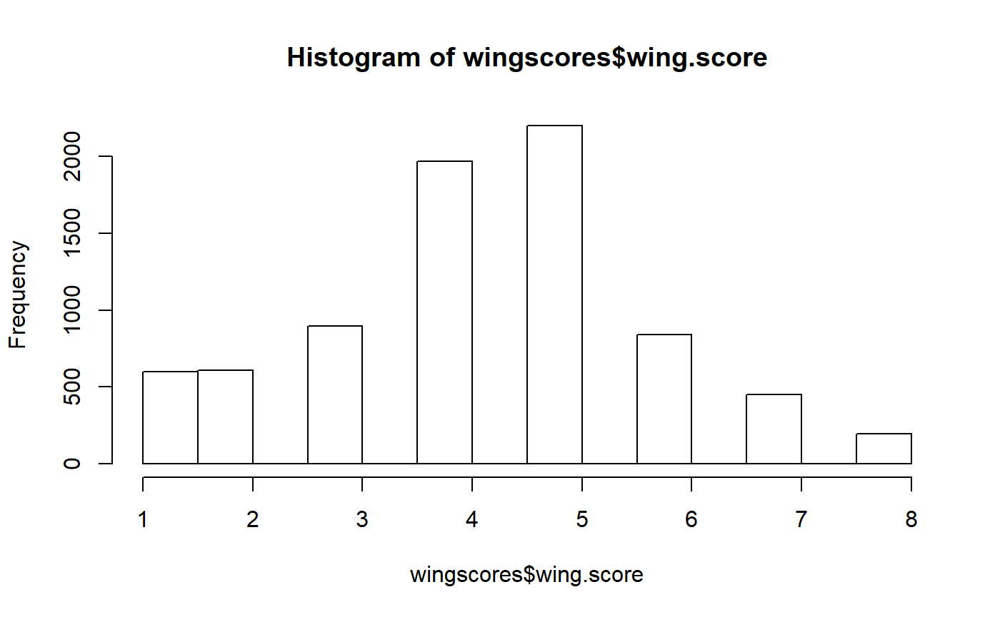

b-loading_the_shroom_package.RmdThis tutorial walkthroughs how to get the shroom package up and running on your computer.
If you haven’t already, downloaded the devtools package (This isn’t necessary if you have downloaded it recently )
#Only do this if you have -never- downloaded
#devtools before
install.packages("devtools")Load devtools into your current R session using library()
library(devtools)If you haven’t done so recently, download the shroom package from github. (The function is install_github() but what it really is doing is copying the files from GitHub to your computer).
devtools::install_github("brouwern/shroom")Load shroom into your current R session using library()
library(shroom)You can check to see if setting up the package and its data worked by loading a dataset
data("wingscores")and looking at it with summary(). Here, we’ll just look at a single column that has the scores.
summary(wingscores$wing.score)
#> Min. 1st Qu. Median Mean 3rd Qu. Max. NA's
#> 1.000 3.000 4.000 4.271 5.000 8.000 3and plot it
hist(wingscores$wing.score)